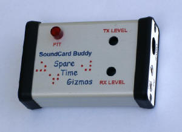

Sound Card Buddy
Sound Card Buddy


|
|
Read the complete Spare Time Gizmos Sound Card Buddy ArticleHam Radio and Digital DataYou've passed your FCC examination, bought yourself a Ham radio, and talked to a few people on the air. Now, what else is that license good for? For one thing, it is possible to use your radio for sending more than just voice. Hams first started sending FAX (facsimile) and RTTY (radio teletype) messages decades ago, and the use of "digital modes" by amateurs has been expanding ever since. Today we have a variety of ways to send digital data, text messages, and images over the airwaves. Before the ready availability of cheap computers, these modes required expensive and specialized equipment. Today all you need is your radio and a PC to operate in any of them. A simple interface connects your radio to your PC's sound card and then specialized software, most of which is either free or shareware, processes the audio to recover the original data. The same software can generally create tones for transmitting data as well, enabling two way communication. What makes a good interface between your radio and PC?
 Second, a patch cord doesn't provide any isolation between the radio and the PC. Isolation is desirable to keep digital noise from the PC out of the radio and to prevent ground loops. Ground loops occur because the radio is typically grounded thru its antenna and the PC is grounded by the power cord, and spurious currents can flow between these two grounds that add hum and noise to the audio. Lastly, a patch cord doesn't provide any way to turn on (or "key") the radio's transmitter. This isn't a problem as long as you only want to receive, but the day will come when you want to transmit your own messages (you did take that FCC test for a reason, after all!) and then you'll need something better. Nearly all the sound card software expects to use a standard PC serial port (a "COM" port) to key the transmitter, and you need a simple circuit to connect the two. Buying or Building a Sound Card InterfaceYou can buy a ready made sound card interface from several commercial sources, or you can find any number of plans for building one on the Internet. If you do decide to buy or build one, keep these few pointers in mind. First, be sure that the interface you get provides isolation for all signal paths. There are several inexpensive interfaces that only provide isolation for the radio's microphone input, and it does no good at all to provide isolation here when you still have to connect an ordinary patch cord between the PC and the radio's earphone output! Also, there are some sound card interfaces that use a VOX circuit to automatically key the transmitter whenever any sound is output from the PC. This may seem attractive, and it saves a COM port, but leads to all sorts of embarrassing situations where you accidentally transmit your MSWindows boot up music, your "You have mail!" announcement, the "error beep, or worse! It's better to have positive control of the transmit function so that you know the transmitter is keyed only when the software has actual data to transmit. The Sound Card BuddyThe Spare Time Gizmos Sound Buddy is about the simplest interface you can build that solves all the problems just described. It provides complete isolation between the PC and the radio; it provides adjustable level matching for both the receive and transmit audio, and it provides a COM port interface to key the transmitter. When youre reading the schematic, be sure to note the difference between the audio ground and digital ground symbols audio ground is used on the radio side and digital on the PC side and the two are never connected. You can download a reprint of a magazine article that describes the Sound Card Buddy. This article includes the complete schematic, a description of how the circuit operates, construction hints, and a parts list. All parts are readily available from common suppliers such as DigiKey, Mouser and Radio Shack, and this circuit can be constructed on a piece of perf board using point to point wiring. This particular enclosure shown in the photos is a Hammond 1455C802 (approximately 1 by 2 by 3 ). Most fairly modern mobile radios, including Kenwood, Yaesu and ICOM rigs, already have a 6 pin mini DIN connector marked data or TNC. If youre lucky enough to have a radio with one of these, then all you need is to connect it directly to J4 using a 6 pin mini DIN patch cord. These patch cords are readily available from your local computer store because theyre commonly used with PC keyboards and/or mice. SoftwareThe AGW Packet Engine, written by George Rossopoulos, SV2AGW, is free Windows software for sending and receiving 9600, 1200 and 300 baud UHF, VHF and HF packet. So far as I can tell, AGWPE is the defacto standard for hams doing packet radio with their sound cards. The free version of AGWPE includes a terminal program (for doing keyboard to keyboard packet), and is directly supported by WinAPRS and many other ham radio programs. George also offers a professional version, AGW Packet Engine Pro, which is not free but adds support for TCP/IP networking in addition to AX.25. Although WinAPRS is not actually sound card software, I will mention it here because it can be used with the AGW Packet Engine to map and track APRS stations. You can use AGWPE for HF packet at 300 baud, this is rarely done any more. The current standard for HF digital communications is PSK31, and there are several PSK31 implementations for a PC and sound card. Just a few of the more popular programs are WinPSK, DigiPan, and HamScope. The latter program, HamScope, also decodes several other modes including RTTY and CW! SSTV (Slow Scan Televsion) is still alive on HF, and you can try out MMSSTV or WinPix32 if you want to experience it for yourself. Finally, although it isnt exactly a Ham radio application, you can also use your sound card interface to receive images from weather satellites. These images are transmitted using facsimile (better known as FAX) and several programs exist to decode them. You might want to try HF-FAX (which also decodes HF FAX and SSTV) or MeteoPro. |
Visit these Spare Time Gizmos
|

{kind=link}